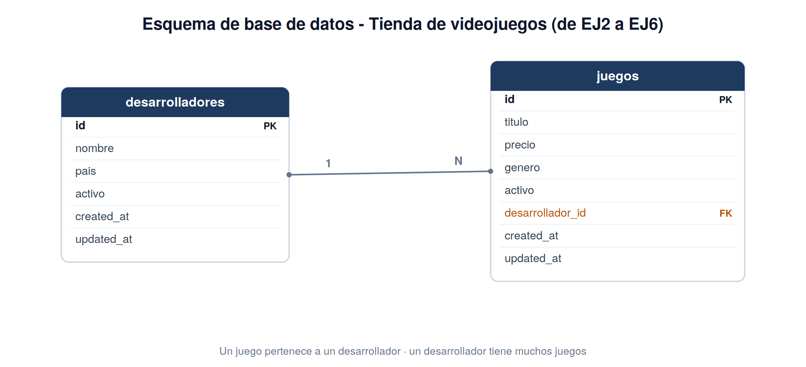

API Resources: la capa de transformación
El problema de devolver el modelo «en crudo»
En la sección anterior la respuesta exponía created_at y devolvía el precio como string. Peor aún: si mañana renombras una columna de la tabla, rompes a todos los clientes. Devolver el modelo directamente acopla el contrato de la API al esquema de la base de datos.
La solución es una capa intermedia que decide qué se publica, con qué nombre y con qué tipo: los API Resources.
Crear y usar un Resource
// app/Http/Resources/JuegoResource.php
namespace App\Http\Resources;
use Illuminate\Http\Request;
use Illuminate\Http\Resources\Json\JsonResource;
class JuegoResource extends JsonResource
{
public function toArray(Request $request): array
{
return [
'id' => $this->id,
'titulo' => $this->titulo,
'precio' => (float) $this->precio,
'precio_iva' => round($this->precio * 1.21, 2),
'genero' => $this->genero,
];
}
}Compara GET /api/juegos/2 antes y después:
Han pasado cuatro cosas: los timestamps han desaparecido, los tipos son correctos, existe un campo calculado (precio_iva) que no está en la tabla, y todo viene envuelto en una clave raíz data.
El Resource es el contrato. La tabla puede cambiar; mientras toArray() devuelva lo mismo, ningún cliente se entera. La envoltura data es la convención que deja sitio a los metadatos (paginación, enlaces) sin mezclarlos con los datos.
Otra forma de calcular un campo: accessors en el modelo
precio_iva se ha calculado dentro del Resource — solo existe en la respuesta JSON, en ningún otro sitio del código. Hay una alternativa: calcularlo en el propio modelo, con un accessor — un método con un nombre especial que Eloquent detecta solo, sin que lo llames tú:
El nombre importa: get + nombre del campo en formato Capitalizado + Attribute. Con esto, $juego->precio_iva funciona como si fuera una columna real — en cualquier parte de tu código, no solo en el Resource — y el Resource simplemente lo expone:
¿Cuál usar? Si el valor solo importa para la respuesta de la API, calcúlalo directamente en el Resource — es más simple, y deja claro que es responsabilidad de la capa de transformación. Si el valor tiene sentido en cualquier parte de tu aplicación (por ejemplo, en un test, en un comando de consola, en otro controlador — no solo en la API), un accessor en el modelo evita repetir la misma lógica en varios sitios.
Colecciones y paginación
GET /api/juegos?page=2 responde con los metadatos ya montados:
{
"data": [
{
"id": 6,
"titulo": "Resident Evil Village",
"precio": 39.99,
"precio_iva": 48.39,
"genero": "survival horror"
},
{
"id": 7,
"titulo": "Diablo IV",
"precio": 69.99,
"precio_iva": 84.69,
"genero": "action RPG"
},
{
"id": 8,
"titulo": "Elden Ring",
"precio": 59.99,
"precio_iva": 72.59,
"genero": "action RPG"
}
],
"links": {
"first": "http://tienda.test/api/juegos?page=1",
"last": "http://tienda.test/api/juegos?page=2",
"prev": "http://tienda.test/api/juegos?page=1",
"next": null
},
"meta": {
"current_page": 2,
"from": 6,
"to": 8,
"per_page": 5,
"total": 8,
"last_page": 2,
"path": "http://tienda.test/api/juegos",
"links": [ ... ]
}
}El cliente no calcula nada: recorre data y usa links.next para pedir la página siguiente.
Relaciones entre modelos: belongsTo y hasMany
Hasta ahora, Juego ha vivido solo — una tabla, sin relación con ninguna otra. Eso cambia aquí: un juego tiene un desarrollador, y un desarrollador tiene muchos juegos.

Antes de escribir código, el concepto:
- La clave ajena vive en un solo sitio: la tabla
juegostiene una columnadesarrollador_id; la tabladesarrolladoresno tiene ninguna columna que apunte ajuegos. - Quien tiene la columna (
juegos) usabelongsTo(): “este juego pertenece a un desarrollador”. - Quien no la tiene (
desarrolladores) usahasMany(): “este desarrollador tiene muchos juegos” — no es una columna real, es una consulta: por debajo, Eloquent haceSELECT * FROM juegos WHERE desarrollador_id = ?.
Eloquent adivina el nombre de la columna a partir del nombre del método: como el método se llama desarrollador(), busca desarrollador_id. Si tu columna se llamara distinto, se lo dirías con un segundo argumento: belongsTo(Desarrollador::class, 'otra_columna').
El problema N+1. Si recorres 20 juegos y accedes a $juego->desarrollador dentro del bucle, Eloquent no lo sabe de antemano: lanza 1 consulta para traer los 20 juegos, y luego una consulta más por cada juego para traer su desarrollador — 21 consultas en total para lo que debería ser 2. Con with('desarrollador') (lo verás en un momento), Eloquent trae los 20 juegos con una consulta y todos sus desarrolladores con una segunda, sin importar cuántos juegos sean. La diferencia entre “consulta por fila” y “consulta por página” es el motivo de ser de with().
Con esto ya puedes seguir: Desarrollador como recurso relacionado. Este scaffold se te proporciona hecho; añádelo a tu proyecto.
scaffold: es una técnica automatizada que genera automáticamente la estructura básica y el código inicial de una aplicación.
// database/migrations/xxxx_create_desarrolladores_table.php
Schema::create('desarrolladores', function (Blueprint $table) {
$table->id();
$table->string('nombre', 80);
$table->string('pais', 40);
$table->boolean('activo')->default(true);
$table->timestamps();
});
// añade a la migración de juegos (o crea una nueva):
$table->foreignId('desarrollador_id')
->nullable()
->constrained('desarrolladores') // igual que en el modelo: sin esto, Laravel
->nullOnDelete(); // adivina mal la tabla a partir de la columna// app/Models/Desarrollador.php
class Desarrollador extends Model
{
// Sin esto, Eloquent adivina la tabla pluralizando "Desarrollador" con reglas
// de inglés y falla ("desarrolladors", no "desarrolladores") — decláralo siempre
// que el nombre del modelo no sea una palabra inglesa.
protected $table = 'desarrolladores';
protected $fillable = ['nombre', 'pais', 'activo'];
public function juegos()
{
return $this->hasMany(Juego::class);
}
}
// app/Models/Juego.php — añade la relación inversa
public function desarrollador()
{
return $this->belongsTo(Desarrollador::class);
}Mostrarla en el Resource: whenLoaded
Ahora, en el Resource, la relación se incluye solo si ha sido cargada:
Con with(), cada juego incluye su desarrollador anidada:
Sin with(), el campo desarrollador desaparece de la respuesta: eso es whenLoaded. Así evitas el problema N+1 de antes: la relación se carga con una consulta para toda la colección, o no se carga en absoluto.
Los dos bloques de arriba son para que veas el mecanismo — en un proyecto real, elige una opción y aplícala igual en index() y en show(). Es un error de diseño frecuente anidar una relación solo en el detalle (show()) y dejarla fuera del listado (index()), o al revés: quien consuma tu API no debería tener que adivinar en qué operación aparece cada campo. Una vez decidido que Juego muestra su desarrollador, muéstralo siempre — en las cinco operaciones que lo devuelven (index, show, y las respuestas de store/update si las cargas).
Esto no significa anidar todo lo posible en cascada: desarrollador no necesita a su vez mostrar sus propios juegos dentro de esta respuesta — el anidado se detiene en un nivel. Solo relaciones directas del recurso que estás sirviendo, mostradas de forma consistente entre listado y detalle.
- Acceder a
$this->desarrollador->nombredirectamente en el Resource sinwhenLoaded: funciona, pero dispara una consulta por cada juego de la colección (N+1). - Olvidar crear
DesarrolladorResourcey devolver el modelo crudo anidado: acabas exponiendo los timestamps que tanto te costó ocultar. - Omitir
protected $tableen un modelo cuyo nombre no es una palabra inglesa: Eloquent pluraliza con reglas de inglés y falla en silencio hasta la primera consulta (“Table ‘desarrolladors’ doesn’t exist”). Compruébalo siempre con(new Desarrollador())->getTable(). - El mismo problema de fondo reaparece en
Route::apiResource('desarrolladores', ...)(lo verás en EJ2 punto 5, y en EJ3 al proteger la escritura): Laravel también adivina el singular con reglas de inglés para nombrar el parámetro de la URL, y falla igual porque genera{desarrolladore}en vez de{desarrollador}, y cualquier petición a un desarrollador concreto responde404aunque exista.
Se corrige con ->parameters(['desarrolladores' => 'desarrollador']) en la propia declaración de la ruta. Compruébalo con artisan route:list --path=api.
Actividades
EJ2 · Transformación con API Resources
Crea
JuegoResourcepublicandoid,titulo,precio,precio_iva(calculado) ygenero; los timestamps no deben aparecer. Añade además un segundo campo calculado propio que no aparezca en esta sección (por ejemplo, una franja de precio tipo “económico”/“estándar”/“premium”).Modifica
index()para devolver la colección paginada de 5 en 5 yshow()para devolver el Resource individual. Analiza en Postman la estructuradata/links/meta.Incorpora el scaffold del modelo
Desarrolladorde esta sección, crea su Resource e inclúyelo enJuegoResourceconwhenLoaded. Comprueba la diferencia entre pedir la colección conwith('desarrollador')y sin él — y quédate con la misma opción enindex()y enshow(), no mezcles una cosa en cada sitio.Haz también el camino inverso:
DesarrolladorResourcedebe poder incluir su lista dejuegosconwhenLoaded(la sección solo te ha enseñado el sentidoJuego → Desarrollador; este lo resuelves tú aplicando el mismo patrón al revés). Compruébalo tanto en el listado de desarrolladores como en la ficha de uno concreto — los dos deben mostrarlo igual.Desarrolladorno debe depender solo de aparecer anidado dentro de un juego: regístrale sus propias rutas de lectura, igual que hiciste paraJuegoen EJ1.
Un DesarrolladorController con apiResource limitado a index/show (GET /api/desarrolladores, GET /api/desarrolladores/{id}). La escritura (crear/editar/dar de baja un desarrollador) llega en el bloque siguiente, junto con la de Juego.